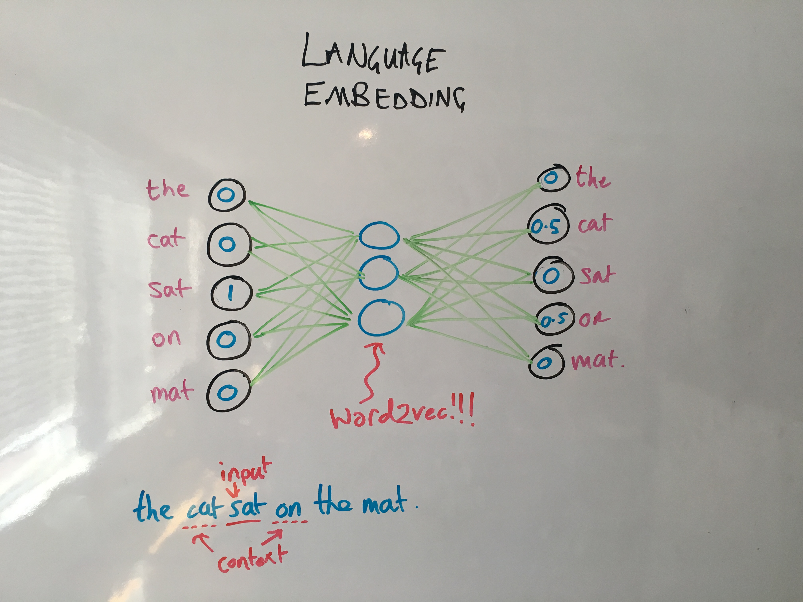

class: center, middle, full-bleed <img src="ff-logo-transparent-bg.png" width="30%"> # Fast Forward Labs ## Current research ??? I do research at FFL. We research things that are: - commercially relevant - cool - recently possible Concretely, this last one means they are more possible today than they were a year or two ago, and we think will be even more important in a couple of years. I'm going to talk about a bunch of stuff that fits those criteria, that we've spent some time looking into. When we look into stuff we build working prototypes, so mostly I'm just going to show you those rather than get into the details of the algorithms, but at the end we're going to switch gears and talk a little more specifically about the algorithmic details of language modeling with neural networks. --- class: full-bleed, middle <video width="100%"> <source src="roborealtor.webm"> </video> ??? Natural language generation is taking structured data, and turning it into unstructured, human-readable text. This has become more important as the amount of structured data we need to analyse has grown, and the number of people who need to analyse it has also grown. Distilling the facts and personlizing the level of detail has become more valuable. --- class: full-bleed, middle <video width="100%" controls autoplay loop> <source src="roborealtor.webm"> </video> ??? We built a prototype that exhibits this by generating real estate listings that conform to the rules of grammar, read like real estate listings, and reflect the factual information you have about the apartment. You can imagine doing something like this for investment portfolios, sales reports or the weather, or pretty much any data that could originate from a database, spreadsheet, or web form. --- class: full-bleed, middle <img src="batch.svg"> ??? Streaming data is data that comes in at such a rate, and is so expensive to move around, that you only have one chance to process it. More of us have access to (or have to deal with!) this data now than did a couple of years ago. Batch algorithms can't keep up in this situation. You have to be smarter about the kinds of analyses you run on it. You've got to make them count. --- class: full-bleed, middle <img src="stream.svg"> ??? We're interested in probabilistic algorithms in this realtime environment. These are probabilistic in the sense that they aren't guaranteed to give exactly the right answer. That sounds bad, but what if they come with a guarantee that the answer is within 1 or 0.1% of the true answer, and instead of taking 24 hours to calculate, they take a second or a minute. Or instead of reading a terabyte of data from disk, they read a few tens of bytes over a cell network. The classic example of this is the Bloom filter. We spent some time looking at that and a new example called HyperLogLog. --- class: full-bleed, middle <video loop autoplay controls width="100%"> <source src="cliquestream.webm"> </video> ??? In many situations "within 1%" is not only good enough. Having the approximate answer in realtime opens up new opportunities and products, or makes it possible to do things we currently do on AWS, on mobile phones. This is our prototype Cliquestream, which uses these techniques to instantly explore the torrent of data we get from the Reddit API. --- class: full-bleed, middle, center ??? Probabilistic programming makes Bayesian inference practical. You get the upsides, without the downsides. The upsides include the idea that risk is a first class citizen of your output. Here's a demo of that we're finishing up right now (which is why it looks rough around the edges). --- class: full-bleed, middle, center <img src="pictograph-eg.png" width=100%> ??? Finally we think about neural networks, particularly in the context of NLP. Deep learning are of course the machine learning technology that has received the most attention over the past few years. And deservedly so. We'll get into how they do what they do in a second, but this is a demo we built of the thing they're famously good at: computer vision problems. I think our view is that for most use cases, image classification with deep learning is going to be something you buy rather than something you build. --- class: center, middle, full-bleed <img src="overview_multi.png" width="60%"> ??? Text is different. It's a much harder problem that a generic API is unlikely to solve for particular use cases. One reason I know it's hard: 80% of humans disagree about the sentiment of a text. I can build a model that I think has 100% accuracy. You'll think it has 80% accuracy. This is not like image classification. Summarization, which this is a cartoon of, is the same deal. It's tough! Sentiment and Summarization are supervised problems, but perhaps equally importantly, there's clustering of documents, which is unsupervised. One of the reasons it's hard is we haven't cracked "language modeling". That's what I'm going to talk about in a bit of detail now. Language modeling is the process by which we digitize or vectorize language. Vectorizing is how we get it into a form a computer can perform downstream analysis on (sentiment, summarization, clustering, etc.) There's two things we can do to give these downstream machine learning system the best possible shot: - Retain as much of the semantic meaning of words when we vectorize - Retain as much of the structure of a document when we vectorize --- class: center, middle <img src="bagwords.png" width="100%"> ??? The simplest way to do this is with a bag of words, which is the simplest possible example of a "vector space model". Two documents are similar if they are close in this vector space. This does a bad job of retaining meaning and no job at all of retaining structure. --- class: center, middle <img src="lda_topics.png" width="70%"> ??? One step up the evolutionary tree is topic models (such as LDA). The idea here is to replace vector indices in a bag or words (which corresponded to words) are replaced with higher order ideas: topics. The first step is to learn topics (i.e. groups of words that cooccur from a corpus of texts). This is a kind of dimensionality reduction (and in fact the topic models that preceded LDA came directly out of dimensionality reduction ideas like PCA. --- class: center, middle <img src="lda_evaluate.png" width="70%"> ??? Having done that, a new document is re-expressed as a combination of topics. That's the vectorized representation that the computer works with. --- class: center, middle, full-bleed <img src="strain.png" width="60%"> ??? This approach doesn't do a bad job at summarization. Here's an example summarization prototype we built, which extracts a dozen representative sentences from 5000 reviews of a popular book on Amazon. Together these are longer than the book itself, so that's too much information to take in. But the single number (3.8/5 or whatever) is too little. By displaying a representative sample, you can learn about the diversity of ideas expressed in the reviews. It's also great for unsupervised downstream tasks like document clustering. And it's great analysing trends in a corpus (e.g. customer support). It's a very practical, mature technology. So while we're doing a better job of retaining semantics (the topics correspond to real ideas than individual tokens as they do in bag of words), we're still doing nothing to deal with document stucture. --- class: center, middle <img src="rnn-background_skipgram.png" width="100%"> ??? Let's look at language embeddings, and in particular word2vec. word2vec is a supervised machine learning problem. Given the input (a word), can you predict the words must likely to immediately precede and follow it. This seems like a pretty weird problem to care about, but the solution generates something very useful -- a vectorization algorithm that retains a huge amount of semantic meaning -- almost incidentally. The particular algorithm used a neural network, so I need to quickly explain what they are. --- class: middle, center <img src="nn.png" width="100%"> ??? This is a neural network. Although there are some interesting connections with neuroscience, just think of them as computational graphs. They're a series of operations performed on data that allow it to generate predictions. In this case we've got 10 input features. These are probably numbers like height, age, whatever. And we've got two outputs which are the thing we want to predict. Maybe it's whether someone with those attributes votes Democrat or Republican. In the middle is where the magic happens. All the inputs are reweighted and mulitplied together and rescaled in hidden layers. If you know linear regression, what's happening is not qualitatively different to that. Just like with linear regression, the difficult bit is figuring out what operations do the best job of making predictions. That's training. Open source libraries like Keras make this much easier than it used to be. --- class: center, middle, full-bleed  ??? But what does this have to do with skipgrams and word2vec. The idea comes from an intuitive idea stated most clearly by the linguist John Firth back in the 1950s: you shall know a word by the company it keeps. Imagine the input to a neural network is 30,000 numbers, which is the size of our vocabulary. All of the inputs except one are 0. One is 1, indicating which word in the vocabulary occurred. The output is also 30,000 numbers. Our job is to predict which words come near the input word. So we want the elements of the output to be large for words that are likely to precede or follow our input word. That's word2vec. But there's an interesting byproduct to getting good at this prediction: the hidden layer. In word2vec those are much smaller than the input and output layers, around few thousand. By ripping the values of these hidden layers for a given input out of the network, we now have vectors we can do other things with rather than just predict context. And given this vector is useful for predicting context (by construction), you could say that intermediate form retains the "meaning" of the word. --- class: center, middle <img src="rnn-background_word2vec.png" width="100%"> ??? Here's an example of the value of those vectors. Words that have vectors close to each other turn out to be semantically related, and the directions and distances between word vectors turn out to be semantically significant too. The way you get from "China" to "Beijing" is the same way you get from "Germany" to "Berlin". We set out to predict the context of words, but we've produced word vectors that can be used to solve analogies. This is all kind of vague, but it turns out that coordinates with these properties are essentially encoding the _meaning_ of words into numbers. And numbers are things computers (or machine learning algorithms) can work with. This is a huge deal! --- class: center, middle <img src="rnn-background_skipthoughts.png" width="90%"> ??? And you don't have to stop at words. You can play the same game with sentences, predicting the sentences that come before and after. This, however, requires a lot more data. Our favorite sentence-level embedding is called skip-thoughts and it uses the MovieBook and BookCorpus. This training set has 11,038 books and 11 movie/book pairs. And just like word2vec was able to solve tasks that it wasn't originally meant to, the intermediate representations or embeddings constructed by skipthoughts can solve problems like sentence relatedness and paraphrase detection without ever being told how to. --- class: center, middle <img src="rnn-background_sequential.png" width="60%"> ??? So that's retaining word meaning. What about order? Arguments are built up. Hypotheticals explored. The first and last sentences carry special significance. All this, helps a human perform a task like summarization or sentiment analysis. And all of it is lost in bag of words or topic modeling. And all of it would be lost if we simply took the sum or average of skip-thoughts vectors. Traditional machine learning struggles here because of a simple almost mundane reason: documents (i.e. the input) are of different lengths. Bag of words and topic modelling are ways around this, but they all throw away order information to squeeze every document into the same size vector. But a couple of years ago, researchers figured out how to chain together neural networks (and crucially, how to train these chains). This allows input or output of arbitrary size to be fed in or out as a sequence with order. These are recurrent neural networks. --- class: middle ```python from keras.models import Model from keras.layers.recurrent import LSTM from keras.layers.core import TimeDistributedDense from skipthoughts import skipthoughts (articles, scores), (articles_test, scores_test) = \ function_that_loads_all_the_training_data() articles_vectors = skipthoughts.encode(articles) articles_vectors_test = skipthoughts.encode(articles_test) model = Model() model.add(LSTM(512, input_shape=(max_sentences, 4800), dropout_W=0.3, dropout_U=0.3)) model.add(TimeDistributedDense(1)) model.compile(loss='mean_absolute_error', optimizer='rmsprop') model.fit(articles_vectors, scores, validation_split=0.10) loss, acc = model.evaluate(articles_vectors_test, scores_test) print('Test loss / test accuracy = {} / {}'.format(loss, acc))` ``` ??? This is pretty much the code we used. Note that skip-thoughts is pre-trained. Text in, vector out. If you do machine learning with text, you can go home and try this right now. Instead of using bag of words as the input to your model, try skip-thoughts. Let me know if it works! This code uses the open source library Keras to build the network. On the backend the linear algebra and automatic differentiation operations are done by Theano or Tensorflow, but using Keras makes building the network much easier. I'm not going to explain every line, but you can see its a very small amount of code. 4800 refers to the size of the skip-thoughts vector for each sentence. Dropout is an approach to regularization, which is a serious risk in neural networks. --- class: center, full-bleed <img src="arstechnica.png" width="100%"> ??? And having trained the model we can no predict sentence scores, which means we can construct a summary. Here's the prototype we built, Brief, which is a browser extension. --- class: center, full-bleed <img src="arstechnica-skim.png" width="100%"> ??? It also has skim mode. --- class: center, full-bleed <img src="alphago.png" width="100%"> ??? And here it is on a more substantial article. There are more examples at [http://www.fastforwardlabs.com/brief/](http://www.fastforwardlabs.com/brief/) and the prototype is available to our clients. --- ## Further reading Topic modelling - Tim Hopper's talk at PyData NYC 2015 [github.com/tdhopper/pydata-nyc-2015](github.com/tdhopper/pydata-nyc-2015) and [youtu.be/_R66X_udxZQ](https://youtu.be/_R66X_udxZQ) - *Probabilistic Topic Models* by David Blei [www.cs.princeton.edu/~blei/papers/Blei2012.pdf](https://www.cs.princeton.edu/~blei/papers/Blei2012.pdf) Neural Networks - *Deep Learning* by LeCun et al. [go.nature.com/7cjbaa](http://go.nature.com/7cjbaa) - The relevant lectures from Andrew Ng's Coursera course - Chapters 1-3 of Michael Nielsen's textbook, [neuralnetworksanddeeplearning.com](http://neuralnetworksanddeeplearning.com/) - My introduction to Keras [mike.place/2016/keras-oriole/](http://mike.place/2016/keras-oriole/) - Chris Olah's articles, [colah.github.io](http://colah.github.io/) (especially back propagation and RNNs/LSTMs) - [*A Primer on Neural Network Models for Natural Language Processing*](http://u.cs.biu.ac.il/~yogo/nnlp.pdf) by Yoav Goldberg